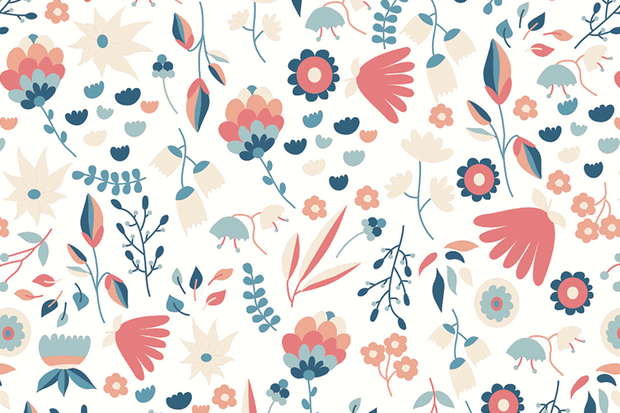

Lola Martinhão
Web Developer
Programadora em treinamento e estudante Le Wagon, agora trabalhando no desenvolvimento dessa profile page !

É claro que o surgimento do comércio virtual desafia a capacidade de equalização dos níveis de motivação departamental.
É claro que o surgimento do comércio virtual desafia a capacidade de equalização dos níveis de motivação departamental.
É claro que o surgimento do comércio virtual desafia a capacidade de equalização dos níveis de motivação departamental.